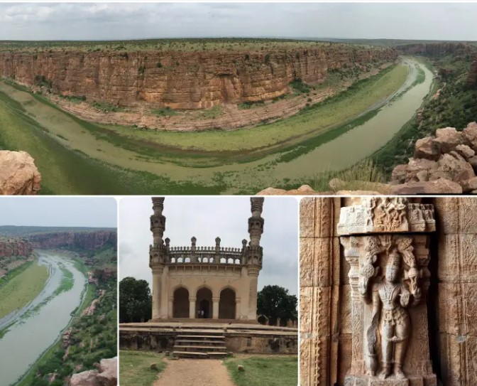
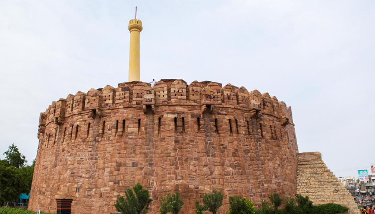
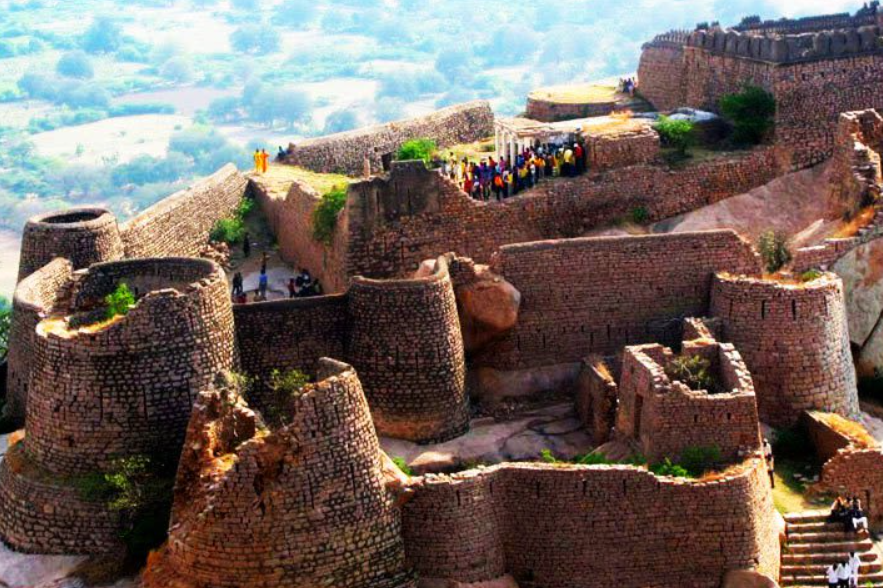
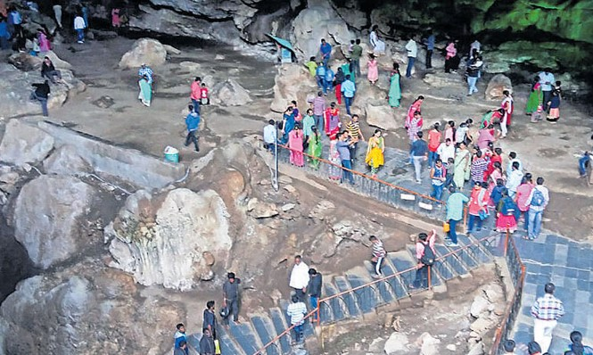
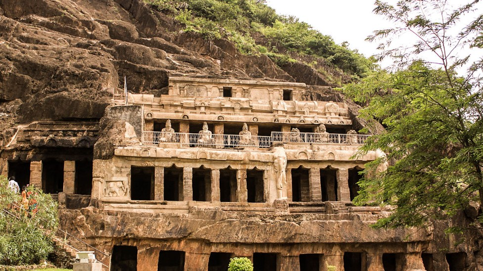
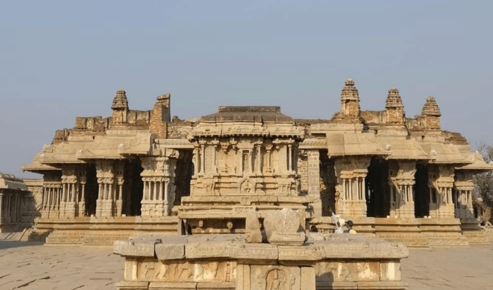

GANDIKOTA

Gandikota is a village and historical fort on the right bank of the Penna river, 15 km from Jammalamadugu in Kadapa district, Andhra Pradesh, India. The fort was the centre of power for various dynasties, such as the Kalyani Chalukyas, Pemmasani Nayakas, and the Golconda Sultanate. A sand fort was constructed by Kaka Raja, Vassals of Kalyani Chalukya rulers. Various additions of Islamic architecture were made during subsequent Muslim rule.The fort of Gandikota acquired its name due to the 'gorge', formed between the Erramala range of hills, also known as Gandikota hills and the river Penna (Pennar) that flows at its foot, reducing its width to a mere 100 m (look for the river image in the montage/main image).In November 2015, Andhra Pradesh government cited a plan to develop Gandikota as next major tourist hub of Andhra Pradesh
KONDAREDDY FORT

According to the book "A History of South India", the Tuluva Vira Narasimharayas, who ruled the Vijayanagara Empire between 1505-1509, gifted the Kandanaveedu fort to Araveedu Ramaraja. These Thulvaveera Narasimharayas are also known as Immadi Narasanayakudu. Here are some facts about the history of "Kandanavolu" fort. Yusuf Adil Khan, the Sultan of Bijapur, crossed the Tungabhadra river and attacked the fort of Kandanavolu. At that time Araveedu Rama Raja stood by Thulvaveera Narasimha and helped him to oust Bijapur Sultan and capture Kandanavolu fort as well as Adoni. With that, the Lord of Vijayanagara, Veeranarasimha appreciated Ramaraja and gifted him the Kandanavolu fort. It is believed that the Kondareddy Fort was built during the Vijayanagara Empire. As part of the expansion of the city, all the walls of this fort were removed during the British period.
GOOTY FORT

Kanaka Durga Temple, also known as Sri Kanaka Durgamma Devasthanam, is a Hindu temple dedicated to Kanaka Durga. The deity in this temple is also popularly referred as Kanaka Durga. The temple is located in Vijayawada, Andhra Pradesh, India on the Indrakeeladri Hills on the banks of Krishna River.Kaalika Purana, Durgaa Sapthashati and other Vedic literature have mentioned about Kanaka Durga on the Indrakeelaadri and have described the deity as Swayambhu, in Triteeya Kalpa.Kanaka Durga Temple is synonymous with Vijayawada. It is mentioned in the sacred texts.View of Temple Complex from Prakasam Barrage.A nearby temple viewed from Prakasam Barrage on night lights It is mentioned in the Hindu scriptures that the deity in the Sri Kanaka Durgamma Devasthanam is regarded as Swayambhu or self-manifested, hence considered very powerful.During the month of Sraavanam, Varalakshmi Vratam is performed on all Fridays with special reverence. More than 20,000 people attends the celebrations during this month.
BORRA CAVES

The Borra Caves (Borrā Guhalu) are located on the East Coast of India, in the Ananthagiri hills of the Araku Valley (with hill ranges' elevation varying from 800 to 1,300 m (2,600 to 4,300 ft)) of the Alluri Sitharama Raju district in Andhra Pradesh. The caves, one of the largest in the country, at an elevation of about 705 m (2,313 ft), distinctly exhibit a variety of speleothems ranging in size and irregularly shaped stalactites and stalagmites.The caves are basically karstic limestone structures extending to a depth of 80 m (260 ft), and are considered the deepest caves in India.Native name for the caves is Borrā Guhalu where Borra means abdomen in and Guhalu means caves in Telugu language.The regional geology in the Eastern Ghats mobile belt, where the caves are located, is represented by the khondalite suite of rocks (garnetiferous sillimanite gneisses, quartzo-feldsphatic garnet gneisses) of Archaen age. Quaternary deposits consist of red bed sediments, laterites, pediment fans, colluvium, alluvium and coastal sandsThe caves in the reserved forest area basically host a variety of speleothems of various sizes and irregularly shaped stalactites and stalagmites.The pyroxenite outcrops are dark and massive and include discontinuous calc-silicate bands, some of brown mica and others with calcite.
UNDAVALLI CAVES

The Undavalli Caves, a monolithic example of Indian rock-cut architecture and one of the finest testimonials to ancient viswakarma sthapathis, are located in Vijayawada of Guntur district in the Indian state of Andhra Pradesh. The caves are located south west of Vijayawada, 22 km north east of Guntur City of Andhra Pradesh. It is one of the centrally protected monuments of national importance.These caves are carved in Gupta style of rock-cut Architecture which goes back to 4th-5th century CE. Most of emperor of Gupta's were Vaishnavas so we can see many sculpture of Narasimha, Vishnu and Ramayans stories.They are associated with the Vishnukundina kings of 420–620 CE. These caves are dedicated to Anantha Padmanabha and Narashimha. Later Jain and Buddhist monks used these as rest houses.
PENUKONDA FORT

According to The Imperial Gazetteer of India,Penukonda was a subdivision and taluk of Anantapur district in Madras province. It contains 96 villages covering an area of 677 square miles. The population in 1901 was 92,482 compared with 81,104 in 1891. Penukonda was the headquarters with a population of 6,806. The Penner River flows along its western and Chitravati river along its eastern boundary.This region was controlled at different points in history by the Hoysalas, Chalukyas, Vijayanagar, Nawabs, Maratha chieftain Murari Rao, Tipu Sultan, Nizam and eventually came under British rule after it was ceded to the British by the Nizam of Hyderabad.It was a melting pot of different religions but the town and fort were established by early Hoysala kings, who were practitioners of Jainism.Parsvanath image in Penukonda style After Krishna Deva Raya, Venkatapathi Rayalu, the Emperor of Vijayanagar, took over. He made Raya Dalavayi Koneti Naidu , as the governor of Penukonda and conferred him the title with Maha-Raja-Raja-Sri and celebrated Koneti Naidu's marriage with Swarna. Koneti Naidu ruled Penukonda, Rayadurga and Kundurpi Forts for about 17 years (1635-1652 AD). After the ruling of Koneti Nayudu his descendants Raya Dalavayi Sri Venkatapathi Nayudu, Peda Timmappa Nayudu, Venkatapathi Nayudu, Koneti Nayudu, Rajagopala Nayudu and Timmappa Nayudu ruled this Penukonda.[citation needed] Following Vijayanagara's defeat at the Battle of Talikota in 1565, Tirumala moved the capital of the Empire to Penukonda, where it stayed until 1592.
Designed by RACHAPUDI SAI SREE